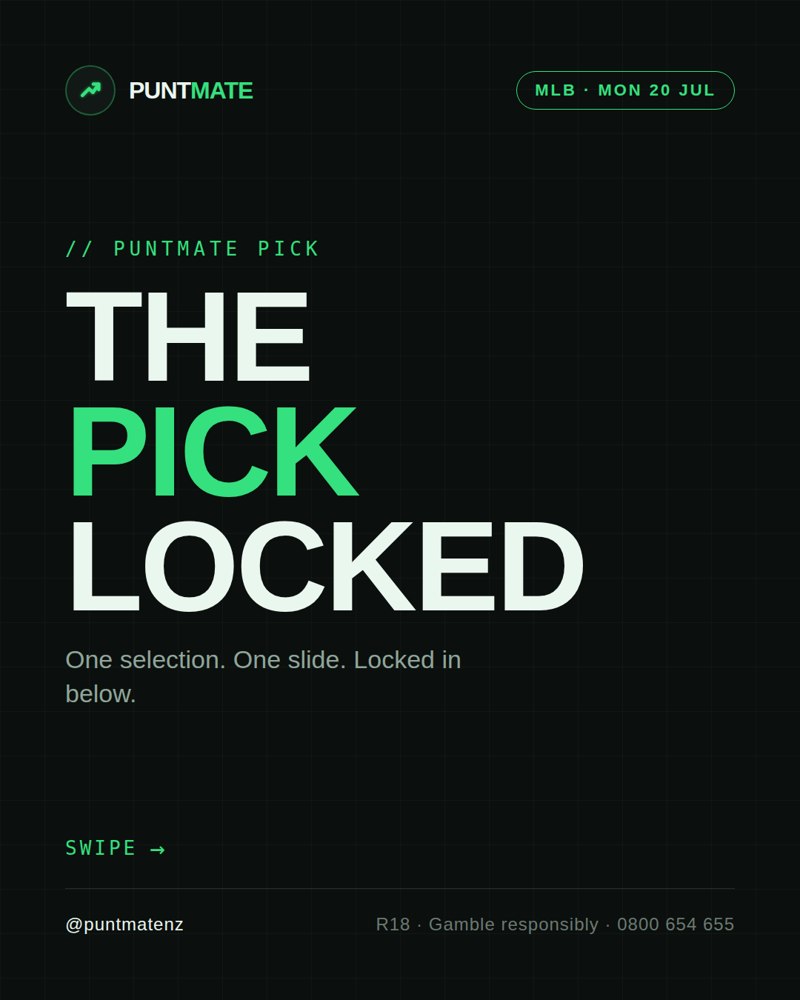
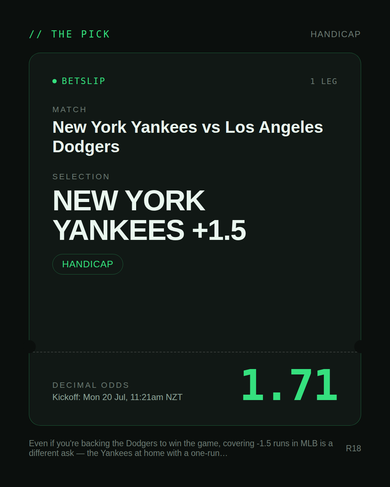
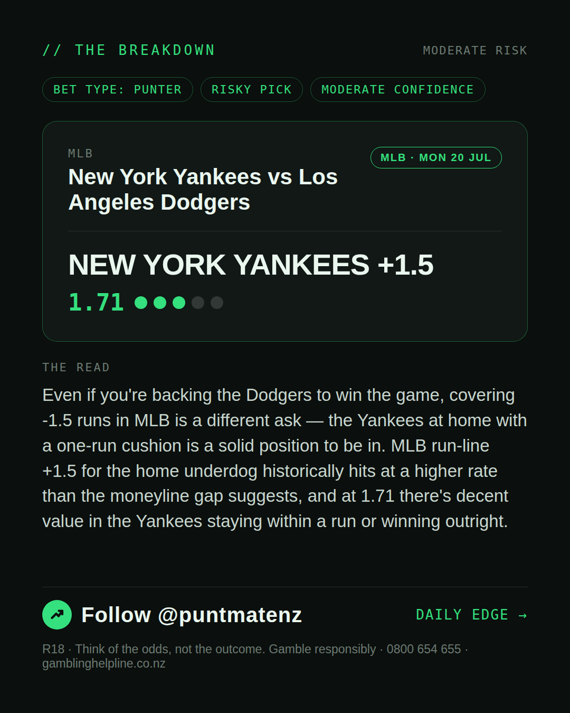
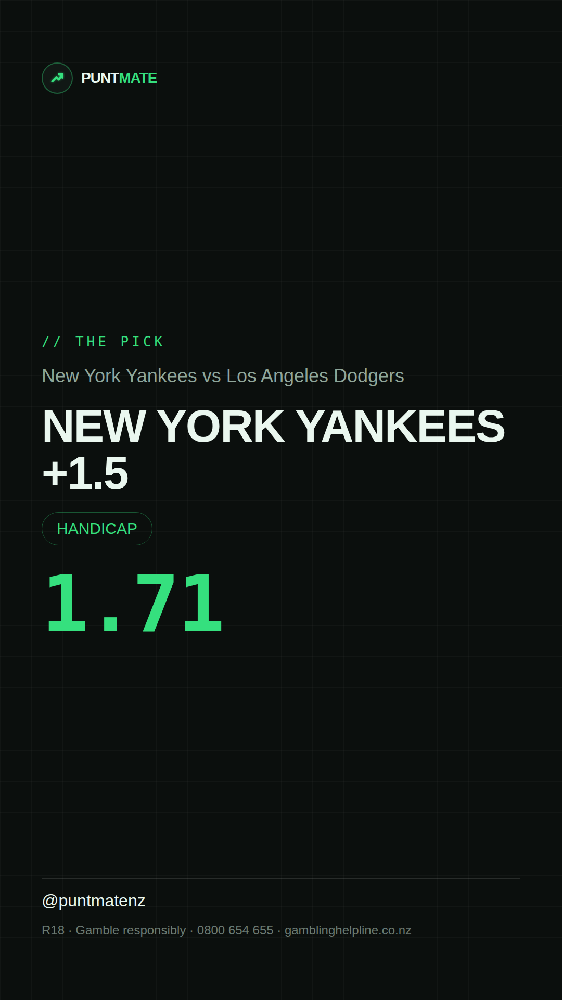

*🎯 PUNTMATE NZ — MLB* 🏟 New York Yankees vs Los Angeles Dodgers *PICK:* NEW YORK YANKEES +1.5 *ODDS:* 1.71 (Handicap) *BET TYPE: PUNTER* _Even if you're backing the Dodgers to win the game, covering -1.5 runs in MLB is a different ask — the Yankees at home with a one-run cushion is a solid position to be in. MLB run-line +1.5 for the home underdog historically hits at a higher rate than the moneyline gap suggests, and at 1.71 there's decent value in the Yankees staying within a run or winning outright._ ────────────────── 📲 Join Telegram for daily picks R18 · Gamble responsibly · Problem Gambling Foundation NZ: 0800 664 262
🎯 MLB — New York Yankees vs Los Angeles Dodgers NEW YORK YANKEES +1.5 @ 1.71 (Handicap) BET TYPE: PUNTER Solid touch here. Not a lock, but the value's real and the form backs it up. Even if you're backing the Dodgers to win the game, covering -1.5 runs in MLB is a different ask — the Yankees at home with a one-run cushion is a solid position to be in. MLB run-line +1.5 for the home underdog historically hits at a higher rate than the moneyline gap suggests, and at 1.71 there's decent value in the Yankees staying within a run or winning outright. Follow for daily value picks → @puntmatenz Problem Gambling Foundation NZ: 0800 664 262 #PuntmateNZ #SportsBetting #NZTAB #MLB
| has_pick | True |
| pick_id | 2026-07-19_New_York_Yankees_vs_Los_Angeles_Dodgers |
| run_id | 29706467002 |
| generated_at | 2026-07-19T22:38:25.012247+00:00 |
| post_date | 2026-07-19 |
| match | New York Yankees vs Los Angeles Dodgers |
| sport | baseball_mlb |
| sport_label | MLB |
| market | Handicap |
| selection | NEW YORK YANKEES +1.5 |
| odds | 1.71 |
| bet_type | PUNTER_BET |
| bet_type_label | BET TYPE: PUNTER |
| bet_type_reason | Solid touch here. Not a lock, but the value's real and the form backs it up. Even if you're backing the Dodgers to win the game, covering -1.5 runs in MLB is a different ask — the Yankees at home with a one-run cushion is a solid position to be in. MLB run-line +1.5 for the home underdog historically hits at a higher rate than the moneyline gap suggests, and at 1.71 there's decent value in the Yankees staying within a run or winning outright. |
| classification | RISKY_PICK |
| risk | RISKY_PICK |
| confidence | MODERATE |
| confidence_label | MODERATE |
| final_explanation | Even if you're backing the Dodgers to win the game, covering -1.5 runs in MLB is a different ask — the Yankees at home with a one-run cushion is a solid position to be in. MLB run-line +1.5 for the home underdog historically hits at a higher rate than the moneyline gap suggests, and at 1.71 there's decent value in the Yankees staying within a run or winning outright. |
| public_caution | Keep this one light — the value's there but so is the uncertainty. |
| theme | night |
| carousel_paths | ['data/review/2026-07-19_New_York_Yankees_vs_Los_Angeles_Dodgers/cover.png', 'data/review/2026-07-19_New_York_Yankees_vs_Los_Angeles_Dodgers/tip.png', 'data/review/2026-07-19_New_York_Yankees_vs_Los_Angeles_Dodgers/breakdown.png'] |
| carousel_urls | ['https://raw.githubusercontent.com/kingofthecastle24/puntmate/main/data/cards/2026-07-19_New_York_Yankees_vs_Los_Angeles_Dodgers_night_1_cover.png', 'https://raw.githubusercontent.com/kingofthecastle24/puntmate/main/data/cards/2026-07-19_New_York_Yankees_vs_Los_Angeles_Dodgers_night_2_tip.png', 'https://raw.githubusercontent.com/kingofthecastle24/puntmate/main/data/cards/2026-07-19_New_York_Yankees_vs_Los_Angeles_Dodgers_night_3_breakdown.png'] |
| story_path | data/review/2026-07-19_New_York_Yankees_vs_Los_Angeles_Dodgers/story.png |
| story_url | https://raw.githubusercontent.com/kingofthecastle24/puntmate/main/data/cards/2026-07-19_New_York_Yankees_vs_Los_Angeles_Dodgers_night_story.png |
| intended_platforms | ['telegram', 'instagram_feed', 'instagram_story', 'facebook'] |
| workflow_state | GENERATED |
| has_punter_multi | False |
| has_gambler_multi | False |
| has_degenerate_multi | False |